Emberbrook red-team — rounds 1–2
Round 2 (2026-08-10) is §9.
2026-08-09 · scene_redteam judge gemini-3.6-flash (PINNED), naive + checklist, N=3, adversarial verify, aim census armed ·
11 plates · bake pinned to a copy of public/assets/scenes/emb-cine taken at run start ·
run dir docs/qa/redteam/run-20260809-emb-round1/ ·
this board is the TRIAGE layer: every verdict verbatim, per plate, with the object its own bbox actually lands on.
READ THE ROW, NEVER THE ROLL-UP
Round 6 of the Dellhollow loop learned that a report which deduplicates a checklist row prints the first
plate's sentence over four other plates' answers — five “same” findings were five different subjects. Every
verdict below is printed against its own plate, with its own bbox put on the geometry. A finding here is a
HYPOTHESIS: this repo's calibration is 4/5 by hand and 2/5 by the mechanical matcher, and stage 2 filters weak
criticism, never confabulation.
0 · The premise was wrong, and the correction matters
CLAUDE.md says “Emberbrook is UNSWEPT: its blockout frames die to the dressing pass.”
That is stale twice over. Emberbrook has been swept four times — run-20260806-1-emberbrook
(both modes), run-20260806-2-emberbrook-checklist, run-20260807-205035-round3water and
run-20260808-005259-round3fieldsky. What is true is narrower and worse:
- The two most recent Emberbrook runs were judged as a GRAY MASSING BLOCKOUT.
BLOCKOUT_DEFAULT
in scene_redteam.mjs still reads {emberbrook: true}, and both round-3 runs record
blockout: true. In that mode the judge is told, verbatim: “Flat untextured surfaces, simple faceted
shapes, missing surface detail and placeholder colours are INTENDED at this stage and are NOT problems.
Do not report them.” The plates are the DRESSED bake — plateSource: emberbrook-dressed.blend,
128 samples, AgX, a night grade.
- And the triage swallows what survives. With
IS_BLOCKOUT live, the tracked rule
emb-blockout-materials arms and every finding containing material / texture / detail / flat / plain /
colour / grey is bucketed “already known — waits for the dressing pass”. Measured on those runs:
3 survivors bucketed emb-blockout-materials and 2 bucketed blockout-dressing.
- Neither round-3 run ran NAIVE mode at all (
modes: ['checklist']). Naive is the only mode that can
catch confusion, and it is the mode this sweep's biggest findings came out of: 58 of 94 survivors are naive.
This run is the first sweep of dressed Emberbrook in ART MODE with both modes and the aim census armed.
(--no-blockout.) The pointer in CLAUDE.md should say so.
1 · What the sweep cost and returned
| stage | n | note |
|---|
| plates swept | 11 | woodroad, waystone, arch, orchard, therise, square, pondlane, homerow, northlane, gateroad, gatefield — every camera in emb-cine |
| raw findings | 125 | naive N=3 per plate + one checklist pass per plate |
| deduped | 117 | |
| refuted at stage 2 | 23 | 21 by the adversarial sceptic, 2 by the aim census |
| survivors | 94 | 58 naive / 36 checklist · 67 NEW, 27 “known” (3 of them wrongly, see §5) |
| API | 65 calls | 113,765 prompt + 117,613 reply tokens, 0 errors — no spend or API blocker |
| bbox agreement | 21/52 | the tool's own check: 40% of judged boxes contain the census point |
2 · The two no-API censuses, on this sweep's own findings
Water census (--water-census)
14,446 water triangles in emb-cine/scene.glb; arming threshold 0.5% of frame, measured through the
shipped projection against each plate's own depth.png.
| plate | visible water | quality:water-read |
|---|
| pondlane | 9.24% | ARMED |
| gatefield | 2.36% | ARMED |
| northlane | 2.13% | ARMED |
| square | 2.03% | ARMED |
| homerow | 0.90% | ARMED |
| gateroad | 0.45% | suppressed |
| arch / therise | 0.12% | suppressed |
| woodroad / waystone / orchard | 0.00% | suppressed |
Aim census (aimOf, armed)
6 [QUALITY] verdicts reached the census. 2 were refuted as aimed at nothing, and both are water:
| family | n | refuted | coverage of the subject inside the judged box |
|---|
| quality:water-read | 3 | 2 | 0.000 · 0.355 · 0.000 |
| quality:sky | 2 | 0 | 0.327 · 0.495 |
| quality:frame-edge-world | 1 | 0 | left unmeasurable on purpose |
67% of Emberbrook's water verdicts were aimed at ZERO water, against round 7's 31% on Dellhollow — the same
defect, worse here. The two killed:
F125 gatefield — “The water surface: FAILING — Completely dark plane lacking reflection”
· 0 of 754 census cells in the box hold visible water; the frame holds 2.4%.F74 square — “The water surface: WEAK — Water surface is extremely dark and lacks…”
· 0 of 340 cells; the frame holds 2.0%.
Both would have been believed: the sceptic is shown the words and never the box, so it cannot catch this
class. One water verdict survives — F100 pondlane, WEAK, aimed at 35.5% real water. That is the town's
only standing water finding, on the only plate that shows meaningful water.
3 · The instrument this round had to build
tools/emb_plate_object.mjs — WHICH OBJECT IS AT THESE PIXELS. No Blender, no browser.
plate_probe is explicit that it names a REGION and never an object, and the doctrine's answer — a Blender
ray census — is unavailable to a lane that does not own the GPU. So a judge's bbox could not be put on the geometry
at all while a bake was running. This closes it: the same world-XYZ reconstruction (the bundle's solved camera +
its rgb24-viewz depth.png, NEAREST only), converted glTF Y-up → the bake's Blender Z-up, nearest-triangle against
scene.glb, reporting the node names and the residual distance.
What it cannot see, said up front: emb-cine/scene.glb is exported from
emberbrook-master.blend — the GRAY BLOCKOUT (CLAUDE.md, “the 146x trap”). Dressing scatter,
leaves, awnings and every render-only card are NOT in it. A high residual means “the thing making this pixel
is dressing, not massing” and is reported, never hidden. It is a screen, not the Blender census.
4 · THE RANKED WORKLIST
#1 — THE WALK NETWORK IS THE TOWN'S PAVING, AND ITS RIM IS A 0.12 m LATTICE STAIRCASE
17.7% of the average frame · 26 of 73 boxed survivors · 10 of 11 plates
Objects: walk_lm_* region aprons (arrival-clearing, gate-court,
orchard, square-plaza.*, washline-green), walk_pad_* doorsteps,
walk_e_* road ribbons. 222 walk meshes in the bundle.
The control that proves it is not an artefact of nearest-triangle attribution. A walk pad could be reported
merely because it lies on the ground. It does not: the walk surface stands 0.12 m proud of
emb_ground_valley, and the shipped plate's own depth surface sits at the WALK top, not the ground top —
measured on six plates, 4,660 of 4,760 samples nearer the walk mesh:
| plate | mesh | |plate − walk| | |plate − ground| | walk − ground | nearer walk |
|---|
| woodroad | walk_lm_arrival-clearing | 0.0041 m | 0.1197 m | 0.120 m | 917 / 917 |
| gatefield | walk_lm_gate-court | 0.0047 m | 0.1211 m | 0.120 m | 760 / 763 |
| homerow | walk_pad_lake-home | 0.0038 m | 0.1221 m | 0.120 m | 788 / 788 |
| square | walk_lm_square-plaza* | 0.0098 m | 0.1265 m | 0.120 m | 661 / 670 |
| waystone | walk_pad/e_waystone* | 0.0040 m | 0.0948 m | 0.094 m | 733 / 741 |
| therise | walk_e_road-gate__square-plaza_l3 | 0.0035 m | 0.0420 m | 0.042 m | 718 / 798 |
The magnitude of the rim itself, straight off the bundle: 2,233.7 m of walk-mesh boundary over 2,806
edges, 52.0% axis-aligned overall — and 100.0% axis-aligned on every walk_lm_* region apron
(orchard 93.6 m / 208 edges, gate-court 92.7 m / 206, arrival-clearing 39.6 m / 88,
mean edge 0.45 m). That is a pure lattice staircase with a lit 0.12 m riser and a black shadow line at every tread.
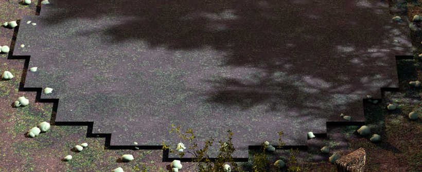
woodroad, ×2.4 gain. walk_lm_arrival-clearing: the clearing's apron rim as a right-angled staircase with a black riser at every step. F1/F7/F14 — three independent naive looks.
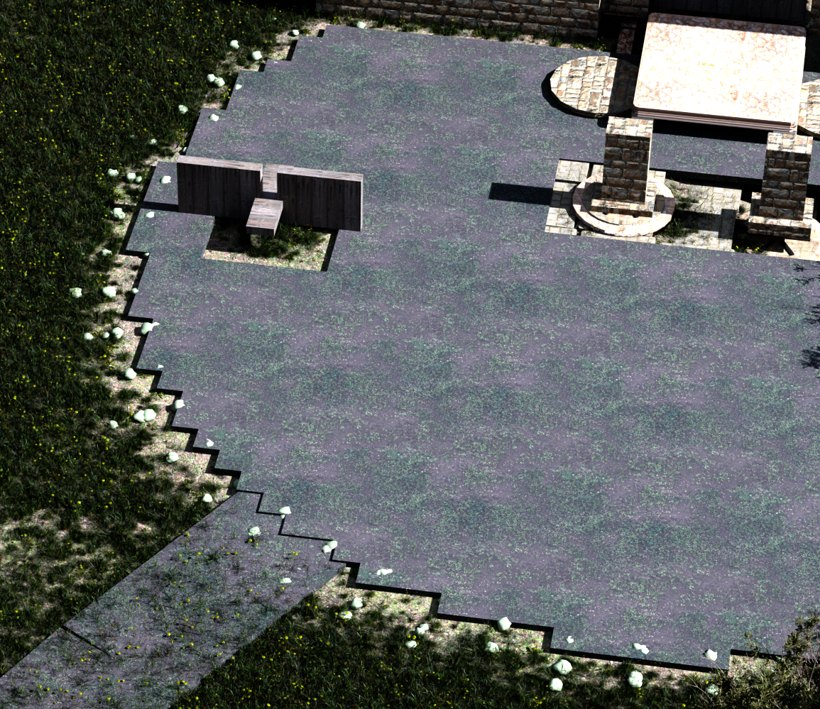
gatefield, ×3.2 gain. walk_lm_gate-court: the same staircase, plus the square cutouts around the sigil plates (F114/F121) — the apron was punched around the props and the 0.12 m riser makes each hole read as bare dirt.
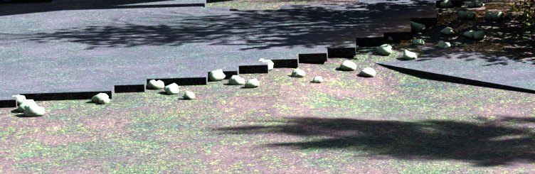
arch, ×2.6 gain. The same rim from a third plate — and the site of a refutation, §6.
What fixing it buys. This is the single largest legible geometric defect in the town and it has an exact
precedent in this repo: emb_brookchop did the identical job for the water (weld the independent lattice
cells into one strip, relax the boundary −22.3% boundary length, seat the bottom ring on the bed) and closed
Emberbrook's water class 0/6 FAILING → 0 FAILING. Doing the same to the paving — relax the walk_lm_*
outlines and seat/chamfer the rim onto emb_ground_valley so no lit vertical face and no shadow line
survives — would retire 21 findings whose description is about the paving itself, across 8 plates, at no
navigational cost (the walk records are unchanged; only the drawn silhouette moves).
Verify against the walk network afterwards — walk_engine_gate and walk_bodygate — because
the walk pad IS the doorstep and a rim relaxation is a change to a walkable surface.
#2 — EMBERBROOK'S SHADOWS GO TO ABSOLUTE ZERO, AND ONE OF THEM SITS ON A STORY PROP
crushed 6.8–15.6% of frame · ground p50 as low as 12.6/255
The plate-wide numbers (plate_probe ground + crushed, on the pinned bake; crushed =
dark AND locally flat, L ≤ 24 with 5×5 sd ≤ 2 — a dark surface that still carries texture is a shadow, a dark
surface that carries none is a hole):
| plate | ground p05 | ground p50 | ground ≤12 | crushed % of frame | baked |
|---|
| gateroad | 0.0 | 12.6 | 48.4% | 12.88% | 08-07 |
| gatefield | 0.0 | 13.9 | 46.6% | 14.55% | 08-02 |
| arch | 1.1 | 27.1 | 27.7% | 15.64% | 08-07 |
| homerow | 0.0 | 29.4 | 31.3% | 14.98% | 08-07 |
| therise | 1.1 | 28.8 | 33.3% | 11.47% | 08-08 |
| pondlane | 1.1 | 26.5 | 27.8% | 10.25% | 08-08 |
| orchard | 1.9 | 32.9 | 26.9% | 10.17% | 08-07 |
| woodroad | 2.6 | 34.8 | 16.3% | 10.08% | 08-02 |
| waystone | 1.9 | 32.6 | 18.8% | 8.08% | 08-02 |
| square | 2.3 | 38.1 | 18.8% | 6.81% | 08-08 |
| northlane | 3.4 | 26.9 | 20.4% | 6.75% | 08-07 |
gateroad and gatefield are a different town from square. gateroad's ground median is 12.6/255 with
48.4% of its floor at or under 12/255; square's is 38.1. 12 of the 94 survivors are directly about not
being able to see the ground.
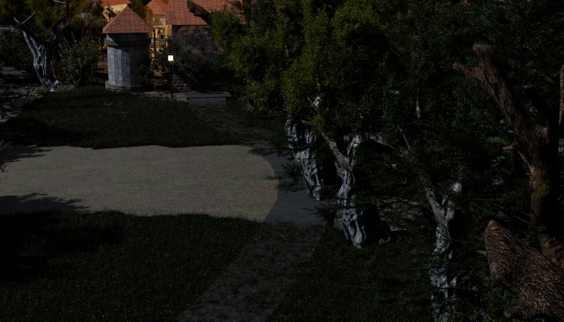
gateroad as shipped. The naive judge, three looks: “the central clear pathway terminates directly into heavy darkness”, “extremely low lighting obscures terrain boundaries and path continuation”, “makes it difficult to tell where navigable space ends and obstacles begin”. Box-measured right half: L p50 9.6, 46.2% of pixels ≤ 8/255, 12.7% crushed.
The sharpest single instance, and it is a story site. Three independent naive looks at homerow reported
“a completely pitch-black rectangular block sits on the path, appearing as broken geometry” (F63/F78/F84).
Measured in the box: L p50 = 1.0/255, 53.9% of pixels ≤ 8, 48.7% crushed, saturation 0.000, against a ring
median of 53.5. 98.2% of the black pixels are walk_pad_lake-home's own surface — attributed on the
DARK PIXELS, not on the rectangle, because a bbox contains its surroundings.
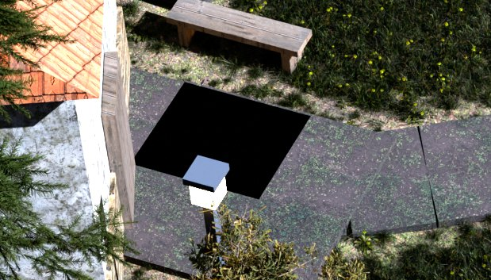
homerow, ×2.2 gain. The pad outside Lake's home. Grandmother's bench is standing in it — and the checklist, independently, reported grandmothers-bench: ABSENT (F104). Two findings, one cause.
What it is not: not a black material (the same pad reads L50 = 45.6 where it is lit) and not the lamp cap's
shadow (the lamp is at x 37.8–38.2, y 47.1–47.5; the black region is x 35.6–38.6, y 48.9–51.0 — 1.5 m away and
in the wrong direction). It is a cast shadow with no fill in it at all.
What fixing it buys. Emberbrook's own night doctrine is on record and is a warning against the obvious
move: “adjusting an existing light has never moved this town; ADDING a new source always has”, and slopes
ran 4.8–10.1 L/W across one town so never borrow another shot's. Dellhollow's rounds 4–6 solved the same class
as ATMOSPHERE and not as light (dh_haze_east_depth, then one anisotropy number) precisely because more
light printed a tiling artefact. Emberbrook has no gorge wall to quilt, so the cheap experiment is a fill/bounce
term rather than a key. Do not treat this as one town-wide number — gateroad/gatefield are 3× worse than
square on the same axis and the doctrine says to solve a class on its median member and give a sub-floor plate its
own two-rung slope.
#3 — THE HEARTLIGHT IS A BLOWN-OUT WHITE BOX
48.1% of its own box at ≥250/255 · 0.28% of frame
Object: lm_heartlight_cap 67.9% + lm_heartlight_flame 11.5% (residual 0.01 m — this
one IS the massing). Naive, twice: “the primary central light source is a raw white emissive cube without any
fire, embers, or lamp fixture model” (F58), “an extremely intense spot of light illuminates the central
stone slab without any visible light source” (F55).
Measured: box L p50 249.3, p95 254.9, 48.1% of pixels at or above 250/255, saturation 0.075 against a
ring saturation of 0.399. Across the three plates that hold it, lm_heartlight_cap reads
L50 = 247.7 — the brightest named object in town by a distance.
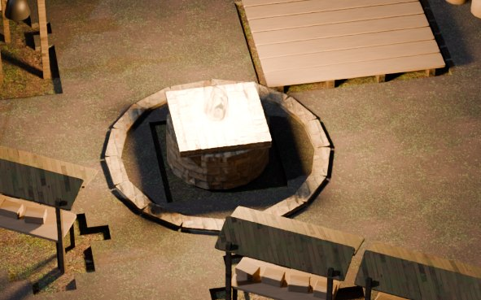
square, no gain. The Heartlight, unretouched.
Why this ranks above much larger defects. World canon: EMBERBROOK IS the Heartlight town; the
Heartlight is the object the town is named for, it is Chapter One's Kindling Hour staging, and
public/js/hush.js exists because “the user chose TAKE THE LIGHT over a grayscale wash and the reason
is canon”. It is one small prop at 0.28% of frame — the cheapest item on this list — and it is currently a
clipped white cube. Expect the fix to be an emissive/fixture model plus a value that does not clip, not a light
change; the plate is baked, so it is a re-bake of square, arch and therise only.
#4 — lm_dovecote_cap: a rectangular hipped roof on a cylindrical shaft
Object named at 72.1%, residual 0.00 m — massing, not dressing. northlane, naive:
“a rectangular hipped roof is placed directly over a cylindrical tower, causing the corners of the roof to
awkwardly overhang open air” (F90, sev 1). 2.75% of frame. Small, unambiguous, one prop.
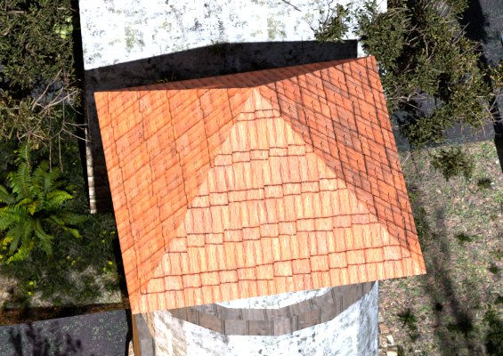
#5 — A FLAT PANEL ON THE WATERMILL THAT THIS LANE CANNOT NAME
homerow, naive twice: “a flat, untextured tan rectangular panel is attached to the timber structure without
detail or material graphics” (F64), “an untextured, plain tan geometric panel” (F85). 2.09% of frame.
Partly refuted, partly upheld, and honestly unnamed. Measured: 5×5 local sd p50 = 2.24 against a
ring of 8.69 — so it is 3.9× flatter than everything around it, but it is above the 2.0 “no texture”
floor, so “untextured” is the wrong word. And the object census abstains: the nearest massing is
lm_watermill_body at a residual of 1.16–1.41 m, i.e. the thing making these pixels is
dressing that is not in the collision bundle. northlane F102 (“roof framing extends into open air”)
lands on the same object at 0.47 m.
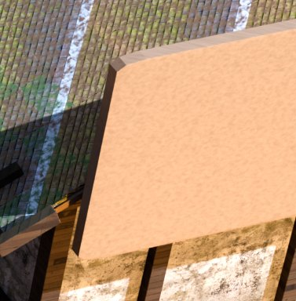
This is the blockout_material_coverage() class in CLAUDE.md — flat untextured paint shipping through
green gates for weeks, on no keep list and matched by no substitution rule. It needs the Blender census
this lane could not run, aimed at world x[47.4,51.1] y[56.6,61.9] z[1.9,8.8].
5 · REFUTATIONS — the things that should not be built
R1 · “Small light-green spheres scattered along the path edge — stray asset clutter” (arch, F13 + F20)
Killed on the pixels, then re-named on the picture. The box's mean RGB is [61.7, 63.3, 62.9] —
neutral grey — with saturation 0.131 against the surrounding ring's 0.136. There is nothing green there and the
box is chromatically indistinguishable from its surround. Two independent naive looks agreed on a colour
that is not present.
And looking at it settles what they actually saw (ev/rim-arch-stones.jpg above): pale kerb
stones set along the apron edge — a deliberate dressing element, the same stones that line gatefield's court —
sitting on #1's staircase rim. The rim is real and is already ranked; the “stray green clutter” is not a
worklist item and building against it would have moved a dressing pass that is doing its job.
R2 · gatefield “The water surface: FAILING — completely dark plane lacking reflection” (F125), and square F74
Killed by the aim census before the sceptic ever saw them: 0 of 754 and 0 of 340 census cells inside
the judged boxes hold visible water. Both plates do hold water (2.4% and 2.0% of frame) — the verdicts point
somewhere else. Emberbrook's water class was closed 0/6 FAILING → 0 FAILING by emb_brookchop on
2026-08-07; a fresh FAILING water verdict on gatefield would have looked like a regression of that work and is
not one. The town's only standing water finding is F100 on pondlane (WEAK, 35.5% real water in its box).
R3 · “The sky is flat / boring” is not an Emberbrook item
The SKY quality family arms off measured sky-pixel fraction, and Emberbrook's plates have almost none:
void is 0.00% on 9 of 11 plates, 1.66% on pondlane and 1.49% on therise. Two sky verdicts were issued, both
on plates that actually have sky, both on-subject (coverage 0.327 / 0.495), and one is WEAK (F54 therise:
“simple gradient visible in a narrow cutout” — on a cutout the census agrees is 2% of frame).
This is the same shape as dh_seam_census's finding that Dellhollow is a closed gorge with no sky to be
flat against. Do not open a sky lane for Emberbrook on this evidence.
R4 · Three “already known” labels are wrong, and they are on the #1 item
F1 woodroad, F42 square and F118 gatefield were bucketed
gate-stair-occluded — a Dellhollow tracked item (“dellhollow.cameras.json gate._framing_note,
stair 6.1% post-bake”) whose terms are [stair|steps|staircase] × [occluded|hidden|…] and which carries
no town key, so it matches any town. All three are the paving-rim finding of §4 #1 and none of them is
about a stair. The largest new defect in this sweep was partly filed as an old defect in another town.
Two other TRACKED rules are unscoped the same way; only emb-blockout-materials carries
town: 'emberbrook'.
R5 · METHOD — the sceptic systematically discounts foliage occlusion, 3× harder than anything else
Refute rates on this run, split by whether the finding is about foliage blocking the view:
| class | raised | refuted | rate |
|---|
| foliage occlusion | 31 | 12 | 39% |
| everything else | 86 | 11 | 13% |
The refusals are all one sentence in twelve costumes: “standard cinematic foreground framing”,
“normal environment composition”, “a standard method for defining map edges”,
“standard vignette framing”. The user's own #1 hand-filed complaint against Dellhollow is
canopy-wall — “a wall of tree canopy stands between the camera and the road into town” — and the
calibration gate already records that complaint as caught only LENIENTLY and only by the checklist, never
strictly and never naive. This measurement says why: the sceptic is refuting that exact class at 3× the base
rate. This is a claim about the harness, not the town, and it is the cheapest thing on this board to test
— re-run stage 2 with the foliage class exempted, or scored against the ray census, and see which of the 12 come
back. It is not a fix I am authorised to make and it is not costed here.
6 · Every verdict, verbatim, by plate
Survivors and refutations together — a refutation is data. NEW
known REFUTED [QUALITY] ·
obj: what this finding's own bbox lands on in emb-cine/scene.glb, with the residual (a large
residual = dressing the collision bundle does not carry).
7 · What this round did NOT and could not measure
- Nothing was fixed. This is a measure-and-rank lane by instruction; no geometry, material, light or plate was touched.
- No Blender. Items #5 and every “residual > 0.5 m” row need the Blender ray census to name their object. The GPU was another lane's.
- Interiors are unswept.
emb-bakery-int, emb-inn-int, emb-item-int, emb-lake-int hold no cine.json cameras this tool reads; only emb-cine's eleven were judged.
- Three plates predate the water carrier and the dressing rebakes — woodroad and waystone (2026-08-02T11:41/12:15) and gatefield (2026-08-02T22:57), against eight baked 08-07/08-08. They also carry the older grade (
exposure 0.78, moon 2.0) where the rebaked eight mostly carry exposure 1.0. Every finding on those three is a finding about a plate that is a week behind its own master, and gatefield is the second-darkest plate in town.
- A plate judge cannot see feet. seam-canon §10.3 stands: nothing here says whether a surface catches a foot, whether a solid blocks the body, or whether a naive reading of a frame escapes. #1 in particular is a change to a WALKABLE surface and owes
walk_engine_gate + walk_bodygate.
8 · ROUND 1 SHIPPED (2026-08-10) — what was built, what refuted, what is owed
Three carriers, one bake set of all eleven plates, and two refutations. Re-judge:
docs/qa/redteam/run-20260810-002549-emb-round1-after/ (all 11) and
run-20260810-004941-emb-round1-homerow-after/ (homerow, after the last fix).
The verdict as a LANGUAGE COUNT, not a vibe
| judge language over the survivors | before | after |
|---|
| rim / staircase / jagged / blocky-step | 8 | 0 |
| darkness / pitch-black / cannot see the ground | 35 | 31 |
| untextured / flat / placeholder | 11 | 8 |
category occlusion | 22 | 13 |
category geometry | 29 | 37 |
| survivors, total | 94 | 97 |
The total went UP and that is the honest result. A town that was too dark to read hid its
own geometry; unsealing the lamps moved 22 occlusion findings down to 13 and 29 geometry findings
up to 37, because the judge can now SEE what it is describing. The one count this round set out to
move — the paving rim — is 8 to 0.
#1 THE PAVING RIM — SHIPPED (tools/emb_pavechop.py)
Weld, relax, seat, on all three tiers. Axis-aligned boundary 67.5% → 33.2%, 1,192 rim
vertices seated onto the ground, 1,045 relaxed, 2,197 pinned at a genuine junction, 0 groundless.
Per apron: orchard 93.6→74.9 m and 100.0%→3.7% axis; gate-court
92.7→79.9 m and 100.0%→9.5%; arrival-clearing 39.6→30.9 m and
100.0%→4.5%; washline-green 24.3→18.9 m and 100.0%→3.7%.
This board's 2,233.7 m is the BUNDLE's number — the blend holds 10,061.1 m over 20,200 edges
at 97.1% axis-aligned because every cell is an independent box, and the glTF exporter's vertex dedup
had already welded what the bundle reports. The carrier welds first and reproduces 2,233.6 m, which
is what makes its receipt comparable.
Two things only the picture caught. Proximity is the wrong junction test (it pinned 587 of
the ribbons' 603 boundary vertices, because the next segment along the same road is 0.36 m away in
the direction the rim runs); and its fix, an outward step per VERTEX, photographed every road in town
as a ladder of separate plates — a one-quad walk_e_..._lN segment has only
corners, and a corner's outward direction bisects into the gap past its neighbour. Shipped: the step
is taken per boundary EDGE at its midpoint, and the boundary is subdivided first so a free rim has
interior vertices no joint owns.
#2 THE BLACK HOLE — CLOSED, AND IT WAS TWO DEFECTS
(a) The town's fourteen lamps have never lit it (tools/emb_lightbodies.py).
emb_lamp_<id>_glass is a closed 0.30×0.30×0.34 m box wearing an
EMISSIVE Principled surface at strength 3.5, Alpha 1.0, no transmission — opaque — and
KEYEMB_lamp_<id> is a 680 W POINT light standing inside it. 165 of 192 shadow rays
from the pad outside Lake's home were blocked by that lamp's own housing. One
visible_shadow flag: homerow L≤8/255 66.1% → 37.9%, square
41.6% → 19.6%, and nothing new clips (≥250 unchanged at 0.00% / 0.10%).
This is item #2 of this board, and it explains CLAUDE.md's own week-old note that
“lamp wattage, twice: inert” — the wattage was sealed in a box.
(b) The black quad survived that fix, and it was two walk pads in one plane
(tools/emb_padcoplanar.py). walk_pad_lake-home and
walk_pad_grandmothers-bench are both z 1.930..2.070 and overlap 1.81×1.55 m; the
black region's silhouette is the stepped UNION of the two footprints, which is what named it.
Control: one hide_render took the box p50 57.9→83.5 and ≤8/255
40.7%→0.1%. Shipped as a 4 mm nudge instead (55 coincident pairs exist town-wide and hiding a
65%-swallowed pad deletes the rest of it): in the shipped plate the box is p50 79.0 and
≤8/255 is 0.0%. Both judge findings retired — the void AND
“Grandmother's bench: ABSENT”.
#3 THE HEARTLIGHT — REFUTED, NOTHING SHIPPED
lm_heartlight_flame does not exist in the dressed master; it is the blockout's
proxy, kit_heartlight kills it, and this board's attribution came from
emb-cine/scene.glb, which is exported from the gray blockout. The dressed master holds
emb_dress_heartflame0..4 (five translucent shells, z 2.38..3.75) and
emb_dress_heartember0..6, all render-visible, outer shell emitting 0.24 against
the lamp glass's 3.5 — and ×12 on every emission node moved 0.54% of the frame above 4/255
and 0.06% above 12/255 (floor 0.01%), heartbox p50 100.9→100.4. The emission knob is inert.
What clips is the CAP: a 2.00×2.00×0.20 m pale stone slab standing 0.75 m under a 5200 W
point light. And the gate is why it survived: kit_heartlight's bar was
“zero clipped pixels on the flame” — a ceiling with no floor. A flame you cannot
see passes it perfectly.
THE PIPELINE TRAP THIS ROUND CAUGHT
A whole-town rebake regrades every plate to cameras.json's
defaults.exposure, and that is not the shipped grade. The default is 0.55; the plates
carry, in cine.json's own per-camera appliedGrade, exposure 1.00 on eight
and 0.78 on three, with moon 1.5/2.0/2.71/3.14/3.75 and a warmAnchorGlow 0.35 + 900 W
waystone lantern on two. Measured against a 0.55 draft of the same master: homerow p50 27.4 vs 3.0,
square 37.8 vs 12.0, gatefield 13.0 vs 1.0. A plain cine_bake --town emberbrook would
have darkened nine of eleven plates by 0.45–0.86 stops with every gate green.
cine.json records the grade; nothing enforces it.
OWED, NAMED, WITH ITS NUMBER
- The untextured tan panel on the watermill is now round 2's #1 — six independent naive
looks on homerow after the fixes, and it is the one item this lane still cannot name: the nearest
massing is
lm_watermill_body at residual 1.16–1.41 m, i.e. dressing the collision
bundle does not carry. It needs the Blender ray census, aimed at world x[47.4,51.1] y[56.6,61.9]
z[1.9,8.8].
- The ribbon/apron JOIN still reads as a hard edge — woodroad, three naive looks:
“the path plane ends with a sharp, unblended polygonal edge”. That is the pinned
joint, by construction: a pinned vertex keeps its 0.12 m riser. 50 of 138 ribbon segments are
entirely pinned.
- gatefield's pillar cutouts survive —
--minloop 2.40 m refused 10 boundary
loops as too short to carry a chamfer, and the pillar holes are among them.
- The Heartlight cap. Massing plus a 5200 W point 0.75 m above it; the flame is built and
translucent and does not respond to emission.
- The root fix for the coincident pads belongs in
emb_blockout, which emitted
two threshold pads at one landmark's height with no overlap test. 55 pairs town-wide.
9 · ROUND 2 (2026-08-10) — the paving is stacked, and the tan panel has a name
Round 2 took round 1's owed list. Two of its five items turned out to be
one defect measured two different ways, the #1 item is named to an object and a material, and the
class the judge writes about most is now measured in square metres instead of counted in sentences.
THE HEADLINE: 106.0 m² of Emberbrook's paving is TWO paving surfaces stacked, at a median step of 70 mm
Instrument: tools/emb_padstack.mjs (no Blender, ~6 s), over the shipped
emb-cine/scene.glb. Every up-facing walk_* triangle is rasterised onto a 5 cm plan
grid; a cell carrying floor faces from two nodes is DOUBLE-COVERED, and its step is the gap between the two.
| band | cells | m² | what it is |
|---|
| ≤ 2 mm | 1927 | 4.82 | z-fighting — round 1 fixed only this (emb_padcoplanar, 55 bbox pairs, one at dz 0.0000) |
| 2–20 mm | 1240 | 3.10 | near-coincident |
| 20–60 mm | 9192 | 22.98 | A PLATE FLOATING ON A PLATE. Does not z-fight; photographs as a lit riser with a shadow line. |
| 60–120 mm | 19423 | 48.56 |
| 120–250 mm | 4941 | 12.35 | deep step |
| > 250 mm | 5679 | 14.20 | real terraces (the plaza stands 0.45 m over the pond road) — REFUSED by the fix, on purpose |
| total | 42402 | 106.0 | 7.0% of the town's 1,510 m² of paved plan |
WHY IT IS THERE. walk_pad_* takes its height from the terrain at its own doorstep,
walk_e_* from a smoothed chain of lane waypoints, walk_lm_* from the area's own floor.
Three independent height sources, each right on its own, and nothing in emb_blockout has ever
compared them where the footprints overlap.
TARGET 1 — the untextured tan panel is emb_dress_mill_gable+1, and it is not untextured
Round 1 could not name it: emb_plate_object put the pixels 1.16–1.41 m in front of the nearest
massing, which is the right answer to the wrong question — the collision bundle is the gray blockout and the
thing making those pixels is dressing. New instrument: tools/emb_ray_census.py — 870 rays
from the shipped solved camera into emberbrook-dressed.blend, per-object BVHs over a
185-of-5,183-mesh shortlist rather than a depsgraph BVH over 6.36 M scattered instances.
| first opaque hit | rays | share | material | distance |
|---|
emb_dress_mill_gable+1 | 642 | 73.8% | emb_dress_boarding | 39.96–42.95 m |
emb_dress_mill_infill | 83 | 9.5% | emb_dress_daub | 42.93–45.26 m |
eleven _sh-1_* shingles | ~100 | ~11% | mat_shingle_cedar | 41.4–43.0 m |
The generator line is ONE BOX — box("emb_dress_mill_gable%+d", …, (0.18, hd + 0.8, RIDGE − EAVE))
— measured in the blend at 0.18 × 10.20 × 2.92 m, one flat face, with a dead-level top edge 0.30 m under the
ridge while the roof it closes slopes away on both sides. And emb_dress_boarding is not
untextured: it carries a stretched noise grain and a bump. Its only spatial frequency is 1/26 m = 38 mm, and
homerow is fov 20 over 768 rows at 42 m = 18.4 mm per plate pixel. The grain is a two-pixel
feature and the denoiser takes it.
Measured on the shipped plate (5×5 local sd, plate_probe.local_sd): gable box
sd 3.45, L50 142.3 against a ring of sd 9.11, L50 87.6 — 2.6× flatter and 1.6× brighter than
everything around it. The daub panels beside it, same mill, same appended-material pipeline, read sd 10.70
against a ring of 8.96 (0.84×): the material family is not the defect, this box is.
A MATERIAL CANNOT RESCUE A SURFACE WHOSE ONLY FREQUENCY IS AT THE SENSOR'S NYQUIST LIMIT. Everything
around it that reads — the studs, the daub, the cedar shingles, the sawn log — carries GEOMETRY at 0.1–0.5 m.
Fixed as geometry, in emb_dress.py (the generator) and tools/emb_millgable.py (the
carrier for the three blends already built): 42 vertical boards a side at a 0.24 m pitch — 13 plate pixels
against the noise's 2 — ±0.018 m relief, each cut to the roof plane above it, plus a barge-board per slope.
88 members, 0 refused.
AND THE CARRIER'S FIRST ASSERTION WAS ITSELF A FINDING. It derives each board's top by
casting UP against the mill's own roofdeck meshes rather than repeating a pitch constant — and it
asserted on all 42 boards, because the gable box sits at local x ±(hw/2 + 1.0) and the deck spans only
±(hw + 1.5)/2. The panel stands 0.25 m PROUD of the roof it is supposed to close.
TARGETS 2 & 3 WERE ONE DEFECT — and the pin rule was right for a seam and wrong for a step
Round 1's emb_pavechop pinned any rim vertex with another walk mesh's top under its outward foot
(within 0.30 m in z). That refusal was derived from the case where it is right — two coplanar plaza blocks, where
a chamfer would cut a 0.12 m trench along an internal seam — and it is wrong for a STEP: a doorstep pad standing
70 mm above the road keeps its full 0.12 m riser, ON the road. The neighbour's HEIGHT now decides, three ways,
each counted:
| neighbour | action | verts |
|---|
level within --joinlevel 0.02 m (or above) | PIN — round 1's case, unchanged | 2089 |
below by ≤ --joinstep 0.20 m | SEAT the rim ONTO the paving below, not onto the ground | 108 |
| below by more | a real terrace — PIN, and COUNT | 4 |
| no neighbour | seat onto the ground (round 1) | 1191 |
Seating a stacked rim onto the GROUND would have been worse than pinning it: the ground under a stacked pad is
0.12 m below the road, which is itself below the pad, so a ground-seated chamfer dives straight through the road.
The 108 are the right 108 — walk_pad_item-shop, _inn, _waystone,
_barn, _pond-jetty, _road-gate, _hillside-cottage,
_elder-house, _pips-den, _home-lane-end, _brook-bridge,
_poppy-stall, _bakery, _lake-home, _watermill and
walk_lm_gate-court — every one of them a pad the judge named
(walk_pad_waystone is 43.5% of waystone F14 "the path slab terminates awkwardly, floating above
the ground"; walk_pad_road-gate is 71.6% of arch F6; walk_pad_pips-den is 36.2% of
pondlane F88). Most pads have exactly 8 boundary vertices and went drop 0 / pin 8 → drop 8 /
step 8: the whole rim, not part of it.
THE ROOT IS IN emb_blockout, AND IT NOW SPEAKS. Reconciling the three height sources is a
walk-network change that pass cannot validate on its own (DOOR[i][2] is read downstream by the
ribbon ends and by scenegraph_derive), so what shipped there is the CENSUS: after every walk surface
is emitted it prints the stacks and the area, so a rebuild can never again ship the defect in silence. Round 9's
floating stair treads were a continue with no log line under a summary that counted treads.
AND THE OTHER HALF OF THE SAME FAMILY: 37.3 m² of paving-enclosed HOLE with nothing standing in it
emb_padstack --holes. An area apron is cut on a 0.45 m lattice around every landmark footprint,
and where the cut is wider than the thing standing in it the player sees terrain 0.12 m below the paving through a
square hole. Enclosed holes only (flood-filled from outside the apron's own bbox, so a bay open to the edge is
not a hole); occupancy tested against the blockout's own solids.
| apron | paved m² | holes | occupied m² | EMPTY m² | % of its own area |
|---|
walk_lm_square-plaza | 434.2 | 6 | 41.74 (3) | 20.65 (3) | 4.8% |
walk_lm_gate-court | 200.5 | 2 | 0.00 (0) | 16.63 (2) | 8.3% |
walk_lm_orchard | 258.5 | 1 | 0.00 | 0.63 | 0.2% |
That is square F40/F49/F50 ("severe geometry tearing and black void seams"), pondlane F76/F88/F90
("black hole voids", "sharp triangular holes") and gatefield F114/F121 ("rectangular cutouts
around the pillar bases, leaving missing tiles and black voids"). NOT fixed this round — it is a
generation-side cut, and the fix is to size the cut to the thing standing in it. Named with its number for round 3.
The occupancy column reads the COLLISION bundle, so a hole covered only by dressing reads as empty: it is a screen
that ranks holes for the eye, never a verdict.
REFUTATIONS — four findings whose box does not contain what it names
The --aim-census only arms on [QUALITY] families. Run
emb_plate_object over EVERY finding and it is an aim census for all of them. Of the 27 geometry
survivors checked this way, three name a subject their own bbox demonstrably does not hold, and a fourth came out
of the quality census:
| finding | the judge's words | what the box actually holds |
|---|
gateroad F115 | "The ground path ends abruptly with a sharp, unblended edge against the grass terrain" (12.0% of frame) | 94.1% emb_ground_valley; every walk_* mesh in the box adds to 4.0%. There is no path in it. |
square F54 | "The building is sunken directly into the terrain without proper foundation or wall transitions" | 94.8% emb_ground_valley, 5.2% walk_pad_smokehouse. There is no building in it. |
therise F31 / F36 | "The path terrain slabs clip awkwardly through the angled ground mesh" / "Flat grey polygonal meshes cut unnaturally through the terrain" | 96.0% / 96.4% lm_infill_03_body — a HOUSE. There is no path in it. |
gatefield quality:water-read | WEAK verdict | 0.0% on-subject by --aim-census. Of three water-read findings, one is misaimed, one is an absence-claim (abstains) and one is ABSENT: emb_brookchop is NOT regressed. |
What round 2 did NOT fix, each with its number
- 37.3 m² of empty enclosed holes in the paving (above). Generation-side; size the footprint cut to
the footprint.
emb_dress_mill_lucam is the gable's twin — the other PLANK box on the same
mill, 2.6 × 1.9 × 2.6 m, and homerow-after's F3/F7 ("an untextured box-like extension sits atop the roof
beam"). Measured on the shipped plate: local sd 4.72 against a ring of 10.59 (2.2× flatter). Same
mechanism, same material, same fix shape; not carried this round.lm_infill_30_track0..3 — northlane F87/F96, "a sharp, unblended rectangular grey slab
sits abruptly in the grass". 43.4% of the box across four cart-track meshes: a pale quad with a razor edge
and a squared-off end, stopping dead in the middle of a field. Looked at
(ev/northlane-track) — the judge is right and it is an EDGE problem, not a shape one.- The water wheel reads as a sawn log — homerow F85, the highest-support geometry finding in the run
(2/3), "a giant sliced wood log geometry clips unnaturally into the building wall and ground". Attribution
is watermill massing at residual 0.85–1.06 m, i.e. dressing again. Not ray-censused this round.
- The Heartlight cap — unchanged from round 1: a 2 × 2 × 0.2 m pale slab 0.75 m under a 5200 W point,
and the emission lever is REFUTED at ×12.
- The >250 mm stack band (14.20 m²) — refused by the taper on purpose; whether the plaza's
0.45 m terrace over the pond road should read as a wall or a ramp is a design call, not a defect.
THE REBAKE LIST, DERIVED FROM RENDERED FRAMES — and two plates refused with their numbers
Whole-town draft A/B, tools/plate_ab.py (new). Arm A is the round-1 geometry rebuilt from
emb_pavechop's own snapshot and the round-1 revision of that file — it reproduced round 1's manifest
to the vertex (1192 seated / 2197 pinned) — and arm B is round 2's. Both arms at the same draft
grade, which is what makes it a ruler.
| shot | changed > 4/255 | > 12/255 | verdict |
|---|
| square | 3.379% | 0.596% | REBAKE |
| homerow | 1.936% | 1.124% | REBAKE |
| northlane | 1.469% | 0.494% | REBAKE |
| pondlane | 0.575% | 0.098% | REBAKE |
| therise | 0.470% | 0.293% | REBAKE |
| arch | 0.168% | 0.089% | REBAKE |
| woodroad | 0.166% | 0.003% | REBAKE |
| gateroad | 0.159% | 0.026% | REBAKE |
| waystone | 0.143% | 0.008% | REBAKE |
| gatefield | 0.005% | 0.001% | REFUSED — under the 0.01% floor |
| orchard | 0.000% | 0.000% | REFUSED — under the 0.01% floor |
gatefield's refusal is the honest confirmation that target 4 is NOT fixed. Its
walk_lm_gate-court took 8 stepped seats, and the frame did not move: what that camera is looking at
is the 16.63 m² of empty hole, which this round measured and did not touch.
AND THE REGRADE TRAP BITES THE DRAFT TOO, IN THE OTHER DIRECTION. Both arms are
drafted at defaults.exposure 0.55 — right for a RULER, useless as a PICTURE: the woodroad and
waystone A/B crops are near-black and nothing can be judged by eye in them. So the numbers come from the draft
and the eye check comes from the shipped bake, which tools/emb_bake_shipped.mjs drives off
each plate's own appliedGrade (eleven plates, SEVEN grade groups).
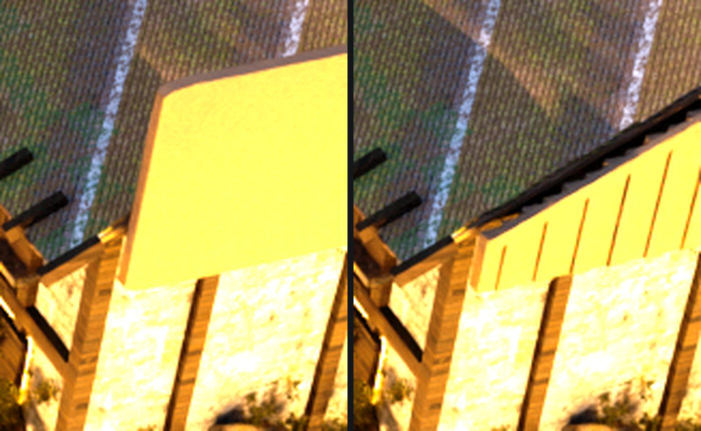
The gable, homerow, draft A/B at 5× with a numeric exposure lift for the eye
only. LEFT: one flat panel with a dead-level top edge. RIGHT: cut to the roof rake it is supposed to close,
with the 0.24 m board seams legible.
THE PICTURE, AT THE SHIPPED GRADE — the two pads the judge named by bbox
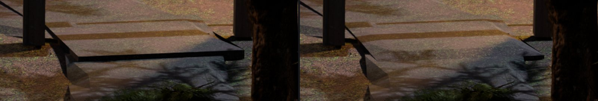
arch, walk_pad_road-gate (71.6% of finding F6, “the walkway slab
beneath the post structure clips unnaturally into the sloped ground with ungrounded floating edges”).
LEFT: a plate standing on the road with a hard black riser running the width of the frame. RIGHT: the rim is
seated ONTO the road and the pad reads as continuous paving. Shipped plates, shipped grade, 5×.
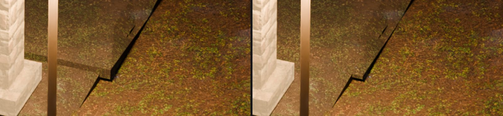
waystone, walk_pad_waystone (43.5% of finding F14, “the path slab
terminates awkwardly, floating above the ground with an unmodeled edge clipping through the terrain”).
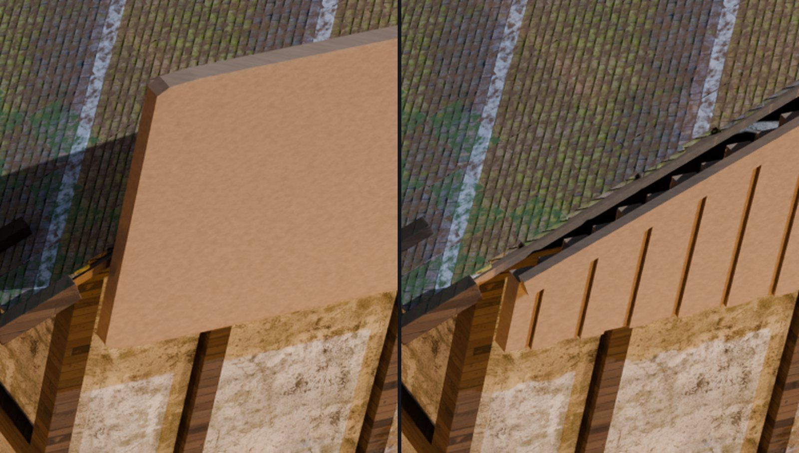
homerow at the SHIPPED grade, before and after — the shipped result, and the
frame that found the round's second defect on the way. LEFT: one flat tan panel with a dead-level top edge.
RIGHT: cut to the roof rake, boarded at a 0.24 m pitch, and CAPPED. The first bake of this fix had no cap: the
board tops step 0.119 m each, which showed on homerow as a staircase with black gaps to the
shingles and on square (26–39 m, gable seen EDGE-ON) as a lit SAWTOOTH along the beam.
Only the picture said so — the carrier's receipt was 88 members / 0 refused, and the draft A/B
ranked square first at 3.379% without saying why.
THE VERDICT AS A LANGUAGE COUNT — and the residual names itself
Re-judge over all eleven plates, same judge, same modes, N=3, 66 calls
(docs/qa/redteam/run-20260810-emb-round2-after/). The two REFUSED plates were judged too, and
they are the control: nothing about them changed, so their movement is the judge's own noise.
| judge language over the survivors | round 1 after | round 2 after |
|---|
| floating / clipping paving slab — the class this round targeted | 8 | 2 |
| black void / tear / hole in the ground | 10 | 6 |
| untextured / flat / placeholder / blank | 2 | 3 |
| rim / staircase / jagged / blocky-step | 0 | 3 |
| darkness / pitch-black / cannot see | 15 | 14 |
category geometry | 37 | 28 |
category occlusion | 13 | 18 |
| survivors, total | 97 | 87 |
| plate | geometry | total | note |
|---|
| square | 4 → 1 | 19 → 9 | the “black void seams” are gone |
| arch | 3 → 3 | 14 → 6 | walk_pad_road-gate's riser gone; the ribbon still reads |
| homerow | 4 → 2 | 7 → 8 | the gable is not mentioned at all; what is left is the lucam and the wheel |
| northlane | 2 → 1 | 4 → 7 | |
| pondlane | 8 → 6 | 14 → 17 | all six remaining are the EMPTY-HOLE class |
| therise | 5 → 5 | 7 → 9 | |
| orchard | 1 → 0 | 9 → 10 | NOT REBAKED — refused at 0.000%. This is judge noise. |
| gatefield | 3 → 3 | 7 → 7 | NOT REBAKED — refused at 0.005%. Its three are the pillar cutouts, unchanged BY CONSTRUCTION. |
THE RESIDUAL NAMED ITSELF, AND IT IS THE ONE THIS ROUND MEASURED AND DID NOT FIX. Nine of
the 28 surviving geometry findings are the EMPTY-HOLE class — pondlane's five (“sharp triangular
holes that expose black void underneath”, “mesh tearing…visible black holes”),
gatefield's three (“square cutouts revealing empty black space beneath the terrain”,
“empty black voids underneath the pillars”) and arch's F8. That is 37.3 m², measured
in §9 above. gatefield is the clean confirmation: the draft A/B refused it at 0.005% of frame, so its
plate is byte-identical to round 1's — and its three findings survive, because the defect does. A refusal
that is right looks exactly like this.
And the honest counter-move: waystone's three geometry findings now say
“STEP gaps” and “step-like seams” where they used to say “floating”. That
is correct and it is the taper's own limit: seating the RIM removes the riser, and the two surfaces are still
stacked 65–78 mm apart in their interiors. The heights have to be reconciled at source.
§10 — ROUND 3, 2026-08-10: the doorstep stops being a height source, and 37.9 m² of empty hole was a cut sized to the map instead of to the building
Target 1 — the 106.0 m² decomposed by mechanism, which nobody had done
emb_padstack's own JSON, classified by the FAMILY of each stacked pair:
| pair family | m² | pairs | what it is |
|---|
| pad over ribbon | 51.77 | 83 | a flat doorstep on a graded lane |
| area over ribbon | 34.69 | 42 | the 0.6 m rim overlap, by design |
| area over pad | 9.94 | 9 | the “coplanar” threshold, off by 70 mm |
| pad over pad | 5.02 | 6 | |
| ribbon over ribbon | 4.57 | 67 | segment joints at corners |
| area over area | 0.02 | 5 | |
SIXTY-SIX OF THE 106 IS A PAD, and the mechanism is arithmetic:
a ribbon starts at DOOR carrying DOOR's own z and then CLIMBS toward the next waypoint,
while walk_pad_* is a FLAT 3.0 m box centred on that same point — so at the pad's far edge the
lane has gained 1.5 m × the local grade. That is the measured 70 mm. And emb_blockout's
threshold-pad branch says in its own comment that it emits the pad “coplanar with it, so
eff_top still has nothing to choose between” — measured, the bakery's threshold stands
70 mm over the plaza it is supposed to be coplanar with.
The fix is one rule, not three (tools/emb_padlevel.py, and the same rule at source in
emb_blockout.py): the pad stops being a height source. Its top is read off the walk surface it
actually stands on — the median, over its own plan cells, of the highest OTHER walk surface there —
plus 4 mm. The 4 mm is round 1's emb_padcoplanar result kept on purpose: two walk surfaces at exactly
0.000 m rendered as a pitch-black hole under walk_pad_lake-home. Flush, never coincident.
DOOR[i][2] is not touched, so the ribbon ends and scenegraph_derive's triggers keep their
authority; what moves is the SLAB, which is a picture and not a contract.
| band | before | predicted | measured |
|---|
| ≤ 2 mm (z-fight) | 5.20 | 6.86 | 5.05 |
| 2–20 mm | 8.38 | 42.17 | 43.09 |
| 20–60 mm | 28.79 | 30.02 | 29.35 |
| 60–120 mm — the modal band, a lit riser and its shadow line | 38.05 | 3.66 | 3.07 |
| 120–250 mm | 11.40 | 9.11 | 11.25 |
| > 250 mm (real terraces) | 14.20 | 14.20 | 14.20 |
| p50 step | 0.0700 m | | 0.0231 m |
Predicted before any Blender ran — the simulation is emb_padstack's own rasteriser with
each pad's z replaced by the rule's answer, five seconds, no bake — and it called the modal band to within
0.6 m². Two things it could not see, and both needed a refusal:
- A pad can stand on another pad, and a pad is exactly what this file moves. Six do. One pass against the
ORIGINAL heights seats
grandmothers-bench 4 mm over where lake-home USED to be and then
drops lake-home 66 mm — re-opening, between two pads, the exact 70 mm step round 1 shipped
emb_padcoplanar to close. So: pass A levels every pad standing on a RIBBON or an AREA FLOOR, pass B
levels the rest onto pass A's ANSWERS.
- Lower only. A pad standing UNDER the surface that crosses it is COVERED by it and shows nothing;
pond-weir sits 0.178 m below the lane that BRIDGES it. Raising buys no picture and costs z-fight. The
measured ≤2 mm band went DOWN, so nothing new z-fights.
emb_pavechop's own receipt is the independent confirmation: rims SEATED ONTO LOWER PAVING
108 → 56, rims PINNED as level with their neighbour 2140 → 2192. Half the stacked rims
stopped being stacked. Double coverage is still 106.0 m² and that is the honest headline: this fixes
HEIGHTS, not overlap — the overlap is deliberate and invisible once the two surfaces agree.
Target 2 — 37.9 m² of empty paving hole, and the cut was sized to the map
| hole | area | what actually stands in it |
|---|
| gate-court sigil | 11.29 | two sigil plates, rim 1.84 m round, 0.32 m proud |
| square well | 10.64 | a 2.00 m well RING and two 0.17 m frames |
| square notice / bell | 8.75 | a 1.72 × 0.09 m BOARD and three 0.13–0.16 m posts |
| gate-court trailhead | 5.33 | a 0.50 × 1.90 m step and two 1.50 × 0.22 m stiles |
| square lamp-ring0 | 1.26 | ONE 0.13 × 0.13 m LAMP POST |
| orchard lamp01 | 0.63 | ONE 0.13 × 0.13 m LAMP POST |
A 0.13 m POST CUTS 1.26 m² OF PAVING — 74× ITS OWN
PLAN AREA. The area-floor loop drops a 0.45 m cell whose CENTRE lands within 0.28 m of a landmark's
foot_rects_cut rectangle, and that rectangle is the MAP'S AUTHORED bodysize, not the
thing the builder stands there. foot_rects_cut's own docstring had already ruled on this shape of
mistake — “the direction of safety is not the same for the two consumers” — and the
lamp is its third instance. And one of the holes is a story site: there is no
walk_pad_sigil-plate-*, so Chapter One's twin sigil plates stood in an 11.29 m² hole with no walk
record anywhere in it.
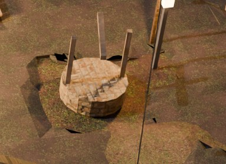
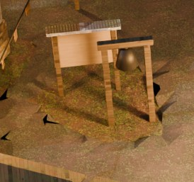
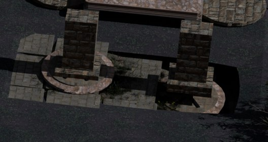
An obstacle is a thing you cannot step over, not a thing that is there — and one 0.20 m threshold
decides five holes. At 0.30 m the festival dais gave back 16.20 m² of walk floor UNDER ITS OWN
DECK (its boards top out 0.259 m over the plaza). At 0.20 m the dais, the market stalls and the Heartlight
plinth hold their holes, while the gate court's own dressing — 1.34 m flagstones at ±0.05 m and the
sigil plates' rims topping out at +0.16 — is PAVING and does not.
And the decision is made once and replayed, because the three blends do not see the same town. The gray
master's own census says 108 cells where the dressed blend says 127. Deriving per blend would have
shipped THREE DIFFERENT WALK NETWORKS with every gate green, and walk_engine_gate compares a bundle
against the ENGINE, never a bundle against a bundle. --cells-out writes the list from
-dressed; --cells-in replays it. Receipt: empty enclosed holes 37.91 → 0.79
m², paved plan 1510.2 → 1537.3 m², and no new stack.
Target 3 — the lucam, and two inherited words were wrong
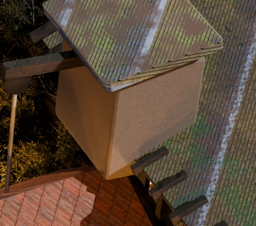
- It is not missing a material, and the thing that makes it look like it is, is worth knowing: every
emb_dress box shares ONE template mesh, so o.data.materials reads [None] on
all of them and the material lives on an OBJECT-linked slot. A probe that reads the mesh's material list finds
nothing on the whole town.
- It is not only a texture problem. Cropped out of the shipped plate it is a pale-tan carton with three
flat faces and one unbroken silhouette, hung on a roof of textured shingles and dark rafters.
A lucam is a hoist housing, and what makes one read is the loading door the sack comes out of.
emb_dress_mill_hoistbeam, _pulley, _rope and _hoistsack already
hang off it and there was nothing for them to come out of. tools/emb_millucam.py boards it at the
gable's own 0.24 m pitch, puts a two-leaf loading door with a lintel and a bressummer in the outward face, and
adds four corner posts — 36 members. Outward is DERIVED from the roof deck's own centroid, never assumed.
The rebake list, derived from rendered frames — ELEVEN OF ELEVEN, and the floor was re-measured to earn it
Arm A is the pre-round-3 dressed master (the untouched blend, placed back INSIDE
tools/blends so its //../textures paths resolve — a blend copied elsewhere renders
MAGENTA); arm B is the shipping one. Both arms at the SAME draft grade, both through the SAME re-solved cameras,
so the only thing that differs is the geometry.
| shot | chg>4/255 | chg>12/255 | medshift | verdict |
|---|
| homerow | 2.003% | 0.657% | −6.06 | REBAKE |
| square | 1.471% | 0.585% | −4.76 | REBAKE |
| pondlane | 0.543% | 0.153% | +4.28 | REBAKE |
| northlane | 0.441% | 0.038% | −4.48 | REBAKE |
| gatefield | 0.423% | 0.011% | −7.50 | REBAKE — round 2 REFUSED this plate at 0.005% and said why: what that camera looks at is the 16.63 m² of empty hole. It moved the moment the hole was filled. |
| therise | 0.303% | 0.143% | −7.43 | REBAKE |
| arch | 0.215% | 0.051% | +5.57 | REBAKE |
| gateroad | 0.112% | 0.017% | −4.57 | REBAKE |
| orchard | 0.075% | 0.007% | +4.50 | REBAKE — round 2 refused it at 0.000% |
| waystone | 0.040% | 0.002% | +4.53 | REBAKE |
| woodroad | 0.019% | 0.000% | −4.14 | REBAKE |
ELEVEN OF ELEVEN LOOKS GLOBAL, SO THE FLOOR WAS RE-MEASURED.
Arm B was rendered a SECOND time from the same blend at the same grade, on the FOUR SMALLEST MOVERS, and every
one came back at 0.000% / 0.000% / +0.00 median (r3-noise-floor.json). So woodroad's 0.019% is
not noise, and the zero-refusal list is real: this round moved the paving, and every camera in Emberbrook can see
paving.
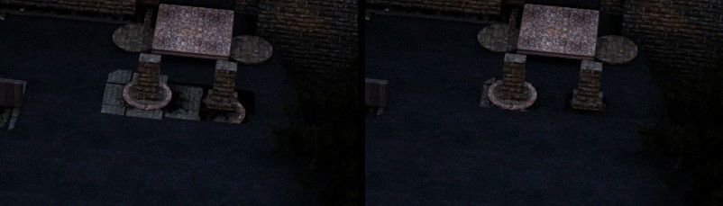
The gate court, A/B at the draft grade (numeric gain on BOTH arms for the eye only). LEFT: pale
isolated slabs around the pier bases with dark between them — “square cutouts revealing empty black
space beneath the terrain”. RIGHT: one continuous surface at one height. Measured over that region, the
near-black fraction falls 17.4% → 14.7% and p05 rises 0.0 → 1.1.
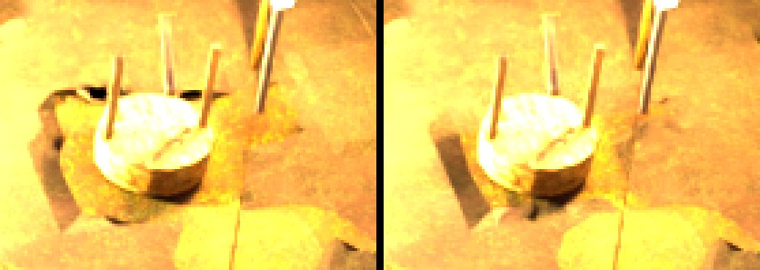
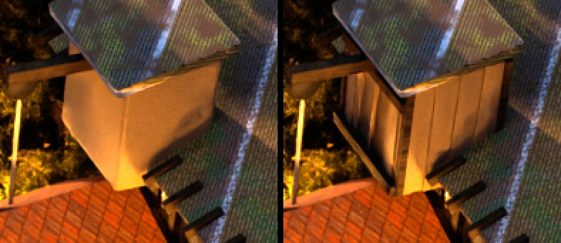
The well's black wedge is gone; the lucam's blank face is boarded, with a corner post, a lintel
band and the loading door's recess. The draft is a RULER, not a picture — both arms are at exposure
0.55, so the eye verdict belongs to the shipped bake.
The walk gates, with a control
walk_engine_gate GREEN on BOTH bundles — 7595 cells / 1538.0 m² in the FILE and the same
in the ENGINE, 0 lost, 0 extra, height agreement median 0.000 m, SIM.bvh().fail 0 (round 2: 7467 /
1512.1). slice_test 776/0. findability_test 69/0 + 11 warnings.
routes_derive --check clean. cine_test 479/1 + 2 soft, the 1 being square's
baked camera is the solved camera — it moved 0.028 m because its region grew, and it is the only one
of eleven that moved at all.
walk_bodygate went 0.15% → 0.23% and the delta was run against a CONTROL (the round-2
bundle out of git, through --glb), so it is attributed rather than argued: 1,564 of the 1,982 new
blocked steps are the three lamp posts whose holes were filled (596 + 488 + 480) and 418 are the brook-bridge
rails, which are relatively taller now that walk_pad_brook-bridge sits 0.076 m lower. Every blocker
is an authored solid and no new one is unexplained. The one real cost is named: --clear is 0.28 m
and the body's radius is 0.30 m, so paving now reaches a ring of cells a 0.6 m body cannot enter — stuck
samples 686 → 1006. Those cells cannot be ENTERED either, so they are dead rather than a trap, and
walk_bodygate does not model the slide that walkStep actually performs. Round 4: run
emb_padfill --clear 0.32.